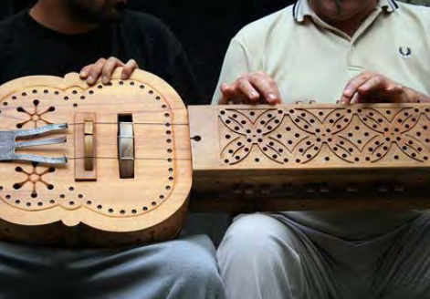
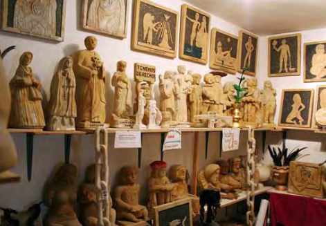

|
Un pueblo que ha aprendido a vivir enarmonía con su entorno, como este, inelu-diblemente ha aprendido también a crearsus piezas más valiosas con todo lo queese entorno ha puesto a su alcance. Lavida diaria de esta zona sería no sólo incomprensible sino también insoportablesin sus manifestaciones artesanales. Elespíritu de estas gentes vive y perduraráen sus creaciones, desde las más sencillas hasta las más complejas Aún son varios los artesanos que en esta zona reproducen las formas y objetosancestrales, manteniendo vivo el caráctery la historia de sus pobladores. Leovigildo Santamaría, en Ferreras deAbajo, es músico y creador de instrumen-tos musicales tradicionales,pero con elvalor añadido de incorporarles verdadera tecnología MIDI, la que convierte el sonidodel instrumento en señales digitales quepueden ser procesadas o pasadas a un pentagrama automáticamente. anfonas,organistrum, rabeles y gaitas son algunosde los instrumentos que este experto arte-sano construye. Él es, además, uno de losprincipales promotores y organizadoresdel Festival de Música Tradicional “Sierrade la Culebra” (ver informaciones prácticas). Jacinto del Buey, en Figueruela de Arriba,construye desde hace años relojes de soltallados en piedra, muchos de los cualesluego son incorporados a las fachadas de algunas construcciones de la comarca. Tallista de esculturasy escudos heráldicossobre piedra arenisca, Alejandro Crespo,posee también un particular museo abierto con sus obras en Pobladura de Aliste.  |